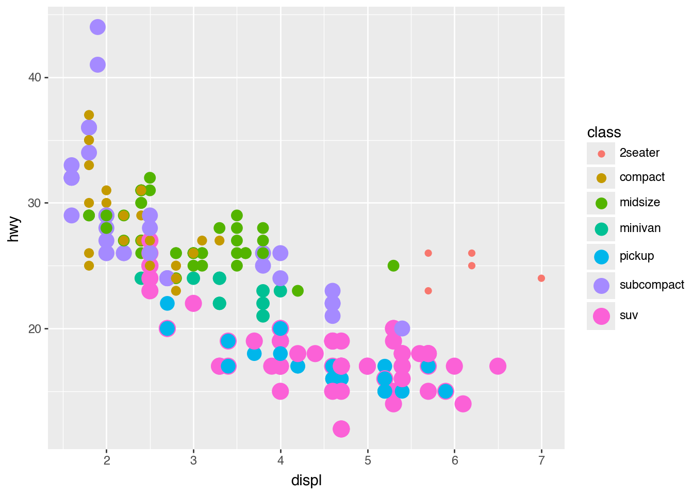

import pandas as pdimport numpy as npfrom palmerpenguins import load_penguins_raw, load_penguinspenguins_raw_df = load_penguins_raw()penguins_df = load_penguins()
/Users/kurtispivert/Documents/00_gh/python_academy_notes/.venv/lib/python3.13/site-packages/palmerpenguins/penguins.py:2: UserWarning: pkg_resources is deprecated as an API. See https://setuptools.pypa.io/en/latest/pkg_resources.html. The pkg_resources package is slated for removal as early as 2025-11-30. Refrain from using this package or pin to Setuptools<81.
import pkg_resources
NB:.loc[] is a special ATTRIBUTE of DataFrame class that uses [ ] instead of ( )
Row Indices
Row index starts at 0 and increases by 1 for each row
Row index values always shown on left of DataFrame
penguins_raw_df.loc[0]
studyName PAL0708
Sample Number 1
Species Adelie Penguin (Pygoscelis adeliae)
Region Anvers
Island Torgersen
Stage Adult, 1 Egg Stage
Individual ID N1A1
Clutch Completion Yes
Date Egg 2007-11-11
Culmen Length (mm) 39.1
Culmen Depth (mm) 18.7
Flipper Length (mm) 181.0
Body Mass (g) 3750.0
Sex MALE
Delta 15 N (o/oo) NaN
Delta 13 C (o/oo) NaN
Comments Not enough blood for isotopes.
Name: 0, dtype: object
penguins_raw_df.loc[1, 'Species']
'Adelie Penguin (Pygoscelis adeliae)'
Can use .loc[] to select >1 value. Use lists of row indicies and column names
Using [ ]to assign or modify a column should work with any vectorized function.
Purpose
Example Usage
Operators
+ - * / ^
Math operations
penguin_size['flipper_length'] / 100
// %
Integer division and remainder
penguin_size['body_mass'] // 100
penguin_size['body_mass'] % 100
< <= > >= != ==
Logical operators returning True or False
penguin_size['body_mass'] >= 4000
Numerical Functions
.round()
Round to specified number of digits
(flipper_length / 100).round()
.abs()
Absolute value
penguin_size['flipper_length'].abs()
numpy.sqrt()
Compute square root
numpy.sqrt(penguin_size['flipper_length'])
numpy.log()
numpy.log2()
numpy.log10()
Compute logarithm with natural, base 2, or base 10
numpy.log10(penguin_size['body_mass'])
Ordered Observations
.shift()
Find the previous value by shifting values down—.shift(1), or next value by shifting values up—.shift(-1), in a column
penguin_size['flipper_length'].shift(1)
.rank()
Rank the values in the column. Choose how ties are handled with method argument. Recommend keeping default na_action = "keep".
penguin_size['body_mass'].rank()
Cumulative Summary Function
.cumsum() .cummin() .cummax()
Cumulatively aggregated summaries. Returns a vector where each item is the cumulative summary statistic (.sum(), .min()) up to that entry in the input vector>
.apply can run on DataFrame objects for each column!
ChainedAssignmentError
penguins_size['flipper_length'][0] =181
/var/folders/zr/6kznk2wd5qg20zv76qj1h8m80000gn/T/ipykernel_70972/3241208630.py:1: FutureWarning: ChainedAssignmentError: behaviour will change in pandas 3.0!
You are setting values through chained assignment. Currently this works in certain cases, but when using Copy-on-Write (which will become the default behaviour in pandas 3.0) this will never work to update the original DataFrame or Series, because the intermediate object on which we are setting values will behave as a copy.
A typical example is when you are setting values in a column of a DataFrame, like:
df["col"][row_indexer] = value
Use `df.loc[row_indexer, "col"] = values` instead, to perform the assignment in a single step and ensure this keeps updating the original `df`.
See the caveats in the documentation: https://pandas.pydata.org/pandas-docs/stable/user_guide/indexing.html#returning-a-view-versus-a-copy
penguins_size['flipper_length'][0] = 181
/var/folders/zr/6kznk2wd5qg20zv76qj1h8m80000gn/T/ipykernel_70972/3241208630.py:1: SettingWithCopyWarning:
A value is trying to be set on a copy of a slice from a DataFrame
See the caveats in the documentation: https://pandas.pydata.org/pandas-docs/stable/user_guide/indexing.html#returning-a-view-versus-a-copy
penguins_size['flipper_length'][0] = 181
Need to df.loc[row_indexer, 'col'] = values
Do NOT use [ ] to select ROWS, you must use .loc[]
Help on function sort_values in module pandas.core.frame:
sort_values(
self,
by: 'IndexLabel',
*,
axis: 'Axis' = 0,
ascending: 'bool | list[bool] | tuple[bool, ...]' = True,
inplace: 'bool' = False,
kind: 'SortKind' = 'quicksort',
na_position: 'str' = 'last',
ignore_index: 'bool' = False,
key: 'ValueKeyFunc | None' = None
) -> 'DataFrame | None'
Sort by the values along either axis.
Parameters
----------
by : str or list of str
Name or list of names to sort by.
- if `axis` is 0 or `'index'` then `by` may contain index
levels and/or column labels.
- if `axis` is 1 or `'columns'` then `by` may contain column
levels and/or index labels.
axis : "{0 or 'index', 1 or 'columns'}", default 0
Axis to be sorted.
ascending : bool or list of bool, default True
Sort ascending vs. descending. Specify list for multiple sort
orders. If this is a list of bools, must match the length of
the by.
inplace : bool, default False
If True, perform operation in-place.
kind : {'quicksort', 'mergesort', 'heapsort', 'stable'}, default 'quicksort'
Choice of sorting algorithm. See also :func:`numpy.sort` for more
information. `mergesort` and `stable` are the only stable algorithms. For
DataFrames, this option is only applied when sorting on a single
column or label.
na_position : {'first', 'last'}, default 'last'
Puts NaNs at the beginning if `first`; `last` puts NaNs at the
end.
ignore_index : bool, default False
If True, the resulting axis will be labeled 0, 1, …, n - 1.
key : callable, optional
Apply the key function to the values
before sorting. This is similar to the `key` argument in the
builtin :meth:`sorted` function, with the notable difference that
this `key` function should be *vectorized*. It should expect a
``Series`` and return a Series with the same shape as the input.
It will be applied to each column in `by` independently.
Returns
-------
DataFrame or None
DataFrame with sorted values or None if ``inplace=True``.
See Also
--------
DataFrame.sort_index : Sort a DataFrame by the index.
Series.sort_values : Similar method for a Series.
Examples
--------
>>> df = pd.DataFrame({
... 'col1': ['A', 'A', 'B', np.nan, 'D', 'C'],
... 'col2': [2, 1, 9, 8, 7, 4],
... 'col3': [0, 1, 9, 4, 2, 3],
... 'col4': ['a', 'B', 'c', 'D', 'e', 'F']
... })
>>> df
col1 col2 col3 col4
0 A 2 0 a
1 A 1 1 B
2 B 9 9 c
3 NaN 8 4 D
4 D 7 2 e
5 C 4 3 F
Sort by col1
>>> df.sort_values(by=['col1'])
col1 col2 col3 col4
0 A 2 0 a
1 A 1 1 B
2 B 9 9 c
5 C 4 3 F
4 D 7 2 e
3 NaN 8 4 D
Sort by multiple columns
>>> df.sort_values(by=['col1', 'col2'])
col1 col2 col3 col4
1 A 1 1 B
0 A 2 0 a
2 B 9 9 c
5 C 4 3 F
4 D 7 2 e
3 NaN 8 4 D
Sort Descending
>>> df.sort_values(by='col1', ascending=False)
col1 col2 col3 col4
4 D 7 2 e
5 C 4 3 F
2 B 9 9 c
0 A 2 0 a
1 A 1 1 B
3 NaN 8 4 D
Putting NAs first
>>> df.sort_values(by='col1', ascending=False, na_position='first')
col1 col2 col3 col4
3 NaN 8 4 D
4 D 7 2 e
5 C 4 3 F
2 B 9 9 c
0 A 2 0 a
1 A 1 1 B
Sorting with a key function
>>> df.sort_values(by='col4', key=lambda col: col.str.lower())
col1 col2 col3 col4
0 A 2 0 a
1 A 1 1 B
2 B 9 9 c
3 NaN 8 4 D
4 D 7 2 e
5 C 4 3 F
Natural sort with the key argument,
using the `natsort <https://github.com/SethMMorton/natsort>` package.
>>> df = pd.DataFrame({
... "time": ['0hr', '128hr', '72hr', '48hr', '96hr'],
... "value": [10, 20, 30, 40, 50]
... })
>>> df
time value
0 0hr 10
1 128hr 20
2 72hr 30
3 48hr 40
4 96hr 50
>>> from natsort import index_natsorted
>>> df.sort_values(
... by="time",
... key=lambda x: np.argsort(index_natsorted(df["time"]))
... )
time value
0 0hr 10
3 48hr 40
2 72hr 30
4 96hr 50
1 128hr 20
ggplot.show( ggplot( data = mpg, mapping = aes( x ='displ', y ='hwy' ) ) + geom_point())
ggplot.show( ggplot( data = mpg, mapping = aes( x ='displ', y ='hwy', color ='class' ) ) + geom_point())
NB: To fix labels from being cut off:
from matplotlib import rcParamsrcParams.update({"savefig.bbox": "tight"})
Aesthetics
size
ggplot.show( ggplot( data = mpg, mapping = aes( x ='displ', y ='hwy', color ='class' ) ) + geom_point( mapping = aes( size ='class' ) ) )
/Users/kurtispivert/Documents/00_gh/python_academy_notes/.venv/lib/python3.13/site-packages/plotnine/scales/scale_size.py:46: PlotnineWarning: Using size for a discrete variable is not advised.

transparencyalpha
ggplot.show( ggplot( data = mpg, mapping = aes( x ='displ', y ='hwy' ) ) + geom_point( mapping = aes( alpha ='class' ) ))
/Users/kurtispivert/Documents/00_gh/python_academy_notes/.venv/lib/python3.13/site-packages/plotnine/scales/scale_alpha.py:71: PlotnineWarning: Using alpha for a discrete variable is not advised.
shape
ggplot.show( ggplot( data = mpg, mapping = aes( x ='displ', y ='hwy', shape ='class' ) ) + geom_point())
ggplot.show( ggplot( data = mpg, mapping = aes( x ='displ', y ='hwy' ) ) + geom_point( mapping = aes( color ='class' ) ) + geom_smooth())
/Users/kurtispivert/Documents/00_gh/python_academy_notes/.venv/lib/python3.13/site-packages/plotnine/stats/smoothers.py:345: PlotnineWarning: Confidence intervals are not yet implemented for lowess smoothings.
ggplot.show( ggplot( data = mpg, mapping = aes( x ='displ', y ='hwy' ) ) + geom_point( mapping = aes( color ='class' ) ) + geom_smooth( mapping = aes( color ='class' ) ))
/Users/kurtispivert/Documents/00_gh/python_academy_notes/.venv/lib/python3.13/site-packages/plotnine/stats/smoothers.py:345: PlotnineWarning: Confidence intervals are not yet implemented for lowess smoothings.
/Users/kurtispivert/Documents/00_gh/python_academy_notes/.venv/lib/python3.13/site-packages/plotnine/stats/smoothers.py:345: PlotnineWarning: Confidence intervals are not yet implemented for lowess smoothings.
/Users/kurtispivert/Documents/00_gh/python_academy_notes/.venv/lib/python3.13/site-packages/plotnine/stats/smoothers.py:345: PlotnineWarning: Confidence intervals are not yet implemented for lowess smoothings.
/Users/kurtispivert/Documents/00_gh/python_academy_notes/.venv/lib/python3.13/site-packages/plotnine/stats/smoothers.py:345: PlotnineWarning: Confidence intervals are not yet implemented for lowess smoothings.
/Users/kurtispivert/Documents/00_gh/python_academy_notes/.venv/lib/python3.13/site-packages/plotnine/stats/smoothers.py:345: PlotnineWarning: Confidence intervals are not yet implemented for lowess smoothings.
/Users/kurtispivert/Documents/00_gh/python_academy_notes/.venv/lib/python3.13/site-packages/plotnine/stats/smoothers.py:345: PlotnineWarning: Confidence intervals are not yet implemented for lowess smoothings.
/Users/kurtispivert/Documents/00_gh/python_academy_notes/.venv/lib/python3.13/site-packages/plotnine/stats/smoothers.py:345: PlotnineWarning: Confidence intervals are not yet implemented for lowess smoothings.
Setting vs Mapping Aesthetics
ggplot.show( ggplot( data = mpg, mapping = aes( x ='displ', y ='hwy' ) ) + geom_point( color ='blue' ))
ggplot.show( ggplot( data = mpg, mapping = aes( x ='displ', y ='hwy' ) ) + geom_point( color ='blue', shape ='x', alpha =0.5 ))
ggplot.show( ggplot( data = mpg, mapping = aes( x ='displ', y ='hwy' ) ) + geom_point( mapping = aes( color ='class', shape ='fl', alpha ='displ' ) ) )
Exercise 1
ggplot.show( ggplot( data = mpg, mapping = aes( x ='displ', y ='hwy' ) ) + geom_point( mapping = aes(# color = 'cty'# size = 'cty' shape ='cty' ) ))
ggplot.show( ggplot( data = mpg, mapping = aes( x ='displ', y ='hwy', color ='cty' ) ) + geom_point() + p9.scale_color_gradient( low ='red', high ='darkblue' ))
Exercise 2
ggplot.show( ggplot( data = mpg, mapping = aes( x ='displ', y ='hwy', color ='class', size ='class', shape ='class' ) ) + geom_point())
/Users/kurtispivert/Documents/00_gh/python_academy_notes/.venv/lib/python3.13/site-packages/plotnine/scales/scale_size.py:46: PlotnineWarning: Using size for a discrete variable is not advised.
Exercise 3
ggplot.show( ggplot( data = mpg, mapping = aes( x ='displ', y ='hwy' ) ) + geom_point( mapping = aes( color ='displ < 5' ) ))
Exercise 4
ggplot.show( ggplot( data = mpg, mapping = aes( x ='displ', y ='hwy' ) ) + geom_point( mapping = aes( color ='class' ) ) + geom_smooth( color ="red" ))
/Users/kurtispivert/Documents/00_gh/python_academy_notes/.venv/lib/python3.13/site-packages/plotnine/stats/smoothers.py:345: PlotnineWarning: Confidence intervals are not yet implemented for lowess smoothings.
( ggplot( data = df, mapping = aes( x ='x', y ='y', color ='ID' ) ) + geom_line( mapping = aes( group ='ID'# <- ) ))
help(geom_line)
Help on class geom_line in module plotnine.geoms.geom_line:
class geom_line(plotnine.geoms.geom_path.geom_path)
| geom_line(
| mapping: 'aes | None' = None,
| data: 'DataLike | None' = None,
| **kwargs: 'Any'
| )
|
| Connected points
|
| **Usage**
|
| geom_line(
| mapping=None,
| data=None,
| *,
| stat="identity",
| position="identity",
| na_rm=False,
| inherit_aes=True,
| show_legend=None,
| raster=False,
| lineend="butt",
| linejoin="round",
| arrow=None,
| **kwargs
| )
|
| Parameters
| ----------
| mapping : ~plotnine.mapping.aes.aes, default=None
| Aesthetic mappings created with [aes](:class:`plotnine.mapping.aes.aes`). If specified and `inherit_aes=True`{.py}, it is combined with the default mapping for the plot. You must supply mapping if there is no plot mapping.
|
| Aesthetic Default value
| ----------- ---------------
| **x**
| **y**
| alpha `1`{.py}
| color `'black'`{.py}
| group
| linetype `'solid'`{.py}
| size `0.5`{.py}
|
| The **bold** aesthetics are required.
| data : ~pandas.DataFrame, default=None
| The data to be displayed in this layer. If `None`{.py}, the data from from the `ggplot()`{.py} call is used. If specified, it overrides the data from the `ggplot()`{.py} call.
| stat : str | ~plotnine.stats.stat.stat, default="identity"
| The statistical transformation to use on the data for this layer. If it is a string, it must be the registered and known to Plotnine.
| position : str | ~plotnine.positions.position.position, default="identity"
| Position adjustment. If it is a string, it must be registered and known to Plotnine.
| na_rm : bool, default=False
| If `False`{.py}, removes missing values with a warning. If `True`{.py} silently removes missing values.
| inherit_aes : bool, default=True
| If `False`{.py}, overrides the default aesthetics.
| show_legend : bool | dict, default=None
| Whether this layer should be included in the legends. `None`{.py} the default, includes any aesthetics that are mapped. If a [](:class:`bool`), `False`{.py} never includes and `True`{.py} always includes. A [](:class:`dict`) can be used to *exclude* specific aesthetis of the layer from showing in the legend. e.g `show_legend={'color': False}`{.py}, any other aesthetic are included by default.
| raster : bool, default=False
| If `True`, draw onto this layer a raster (bitmap) object even ifthe final image is in vector format.
| **kwargs: Any
| Aesthetics or parameters used by the `stat`.
|
| See Also
| --------
| plotnine.geom_path : For documentation of other parameters.
|
| Method resolution order:
| geom_line
| plotnine.geoms.geom_path.geom_path
| plotnine.geoms.geom.geom
| abc.ABC
| builtins.object
|
| Methods defined here:
|
| setup_data(self, data: 'pd.DataFrame') -> 'pd.DataFrame'
| Modify the data before drawing takes place
|
| This function is called *before* position adjustments are done.
| It is used by geoms to create the final aesthetics used for
| drawing. The base class method does nothing, geoms can override
| this method for two reasons:
|
| 1. The `stat` does not create all the aesthetics (usually
| position aesthetics) required for drawing the `geom`,
| but those aesthetics can be computed from the available
| data. For example [](`~plotnine.geoms.geom_boxplot`)
| and [](`~plotnine.geoms.geom_violin`).
|
| 2. The `geom` inherits from another `geom` (superclass) which
| does the drawing and the superclass requires certain aesthetics
| to be present in the data. For example
| [](`~plotnine.geoms.geom_tile`) and
| [](`~plotnine.geoms.geom_area`).
|
| Parameters
| ----------
| data :
| Data used for drawing the geom.
|
| Returns
| -------
| :
| Data used for drawing the geom.
|
| ----------------------------------------------------------------------
| Data and other attributes defined here:
|
| __abstractmethods__ = frozenset()
|
| __annotations__ = {}
|
| ----------------------------------------------------------------------
| Methods inherited from plotnine.geoms.geom_path.geom_path:
|
| draw_panel(
| self,
| data: 'pd.DataFrame',
| panel_params: 'panel_view',
| coord: 'coord',
| ax: 'Axes'
| )
| Plot all groups
|
| For efficiency, geoms that do not need to partition
| different groups before plotting should override this
| method and avoid the groupby.
|
| Parameters
| ----------
| data :
| Data to be plotted by this geom. This is the
| dataframe created in the plot_build pipeline.
| panel_params :
| The scale information as may be required by the
| axes. At this point, that information is about
| ranges, ticks and labels. Attributes are of interest
| to the geom are:
|
| ```python
| "panel_params.x.range" # tuple
| "panel_params.y.range" # tuple
| ```
| coord :
| Coordinate (e.g. coord_cartesian) system of the geom.
| ax :
| Axes on which to plot.
| params :
| Combined parameters for the geom and stat. Also
| includes the `zorder`.
|
| handle_na(self, data: 'pd.DataFrame') -> 'pd.DataFrame'
| Remove rows with NaN values
|
| geoms that infer extra information from missing values
| should override this method. For example
| [](`~plotnine.geoms.geom_path`).
|
| Parameters
| ----------
| data :
| Data
|
| Returns
| -------
| :
| Data without the NaNs.
|
| Notes
| -----
| Shows a warning if the any rows are removed and the
| `na_rm` parameter is False. It only takes into account
| the columns of the required aesthetics.
|
| ----------------------------------------------------------------------
| Static methods inherited from plotnine.geoms.geom_path.geom_path:
|
| draw_group(
| data: 'pd.DataFrame',
| panel_params: 'panel_view',
| coord: 'coord',
| ax: 'Axes',
| params: 'dict[str, Any]'
| )
| Plot data belonging to a group.
|
| Parameters
| ----------
| data :
| Data to be plotted by this geom. This is the
| dataframe created in the plot_build pipeline.
| panel_params :
| The scale information as may be required by the
| axes. At this point, that information is about
| ranges, ticks and labels. Keys of interest to
| the geom are:
|
| ```python
| "x_range" # tuple
| "y_range" # tuple
| ```
| coord : coord
| Coordinate (e.g. coord_cartesian) system of the geom.
| ax : axes
| Axes on which to plot.
| params : dict
| Combined parameters for the geom and stat. Also
| includes the `zorder`.
|
| draw_legend(data: 'pd.Series[Any]', da: 'DrawingArea', lyr: 'layer') -> 'DrawingArea'
| Draw a horizontal line in the box
|
| Parameters
| ----------
| data : Series
| Data Row
| da : DrawingArea
| Canvas
| lyr : layer
| Layer
|
| Returns
| -------
| out : DrawingArea
|
| legend_key_size(
| data: 'pd.Series[Any]',
| min_size: 'tuple[int, int]',
| lyr: 'layer'
| ) -> 'tuple[int, int]'
| Calculate the size of key that would fit the layer contents
|
| Parameters
| ----------
| data :
| A row of the data plotted to this layer
| min_size :
| Initial size which should be expanded to fit the contents.
| lyr :
| Layer
|
| ----------------------------------------------------------------------
| Data and other attributes inherited from plotnine.geoms.geom_path.geom_path:
|
| DEFAULT_AES = {'alpha': 1, 'color': 'black', 'linetype': 'solid', 'siz...
|
| DEFAULT_PARAMS = {'arrow': None, 'lineend': 'butt', 'linejoin': 'round...
|
| REQUIRED_AES = {'x', 'y'}
|
| ----------------------------------------------------------------------
| Methods inherited from plotnine.geoms.geom.geom:
|
| __deepcopy__(self, memo: 'dict[Any, Any]') -> 'geom'
| Deep copy without copying the self.data dataframe
|
| geoms should not override this method.
|
| __init__(
| self,
| mapping: 'aes | None' = None,
| data: 'DataLike | None' = None,
| **kwargs: 'Any'
| )
| Initialize self. See help(type(self)) for accurate signature.
|
| __radd__(self, other: 'ggplot') -> 'ggplot'
| Add layer representing geom object on the right
|
| Parameters
| ----------
| plot :
| ggplot object
|
| Returns
| -------
| :
| ggplot object with added layer.
|
| draw_layer(self, data: 'pd.DataFrame', layout: 'Layout', coord: 'coord')
| Draw layer across all panels
|
| geoms should not override this method.
|
| Parameters
| ----------
| data :
| DataFrame specific for this layer
| layout :
| Layout object created when the plot is getting
| built
| coord :
| Type of coordinate axes
| params :
| Combined *geom* and *stat* parameters. Also
| includes the stacking order of the layer in
| the plot (*zorder*)
|
| setup_aes_params(self, data: 'pd.DataFrame')
| Override this method to verify and/or adjust aesthetic parameters
|
| Parameters
| ----------
| data :
| Data
|
| setup_params(self, data: 'pd.DataFrame')
| Override this method to verify and/or adjust parameters
|
| Parameters
| ----------
| data :
| Data
|
| to_layer(self) -> 'layer'
| Make a layer that represents this geom
|
| Returns
| -------
| :
| Layer
|
| use_defaults(self, data: 'pd.DataFrame', aes_modifiers: 'dict[str, Any]') -> 'pd.DataFrame'
| Combine data with defaults and set aesthetics from parameters
|
| geoms should not override this method.
|
| Parameters
| ----------
| data :
| Data used for drawing the geom.
| aes_modifiers :
| Aesthetics to evaluate
|
| Returns
| -------
| :
| Data used for drawing the geom.
|
| ----------------------------------------------------------------------
| Class methods inherited from plotnine.geoms.geom.geom:
|
| aesthetics() -> 'set[str]'
| Return all the aesthetics for this geom
|
| geoms should not override this method.
|
| ----------------------------------------------------------------------
| Static methods inherited from plotnine.geoms.geom.geom:
|
| draw_unit(
| data: 'pd.DataFrame',
| panel_params: 'panel_view',
| coord: 'coord',
| ax: 'Axes',
| params: 'dict[str, Any]'
| )
| Plot data belonging to a unit.
|
| A matplotlib plot function may require that an aethestic
| have a single unique value. e.g. `linestyle="dashed"`{.py}
| and not `linestyle=["dashed", "dotted", ...]`{.py}.
| A single call to such a function can only plot lines with
| the same linestyle. However, if the plot we want has more
| than one line with different linestyles, we need to group
| the lines with the same linestyle and plot them as one
| unit. In this case, draw_group calls this function to do
| the plotting. For an example see
| [](`~plotnine.geoms.geom_point`).
|
| Parameters
| ----------
| data :
| Data to be plotted by this geom. This is the
| dataframe created in the plot_build pipeline.
| panel_params :
| The scale information as may be required by the
| axes. At this point, that information is about
| ranges, ticks and labels. Keys of interest to
| the geom are:
|
| ```python
| "x_range" # tuple
| "y_range" # tuple
| ```
|
| In rare cases a geom may need access to the x or y scales.
| Those are available at:
|
| ```python
| "scales" # SimpleNamespace
| ```
| coord :
| Coordinate (e.g. coord_cartesian) system of the
| geom.
| ax :
| Axes on which to plot.
| params :
| Combined parameters for the geom and stat. Also
| includes the `zorder`.
|
| from_stat(stat: 'stat') -> 'geom'
| Return an instantiated geom object
|
| geoms should not override this method.
|
| Parameters
| ----------
| stat :
| `stat`
|
| Returns
| -------
| :
| A geom object
|
| Raises
| ------
| PlotnineError
| If unable to create a `geom`.
|
| ----------------------------------------------------------------------
| Data descriptors inherited from plotnine.geoms.geom.geom:
|
| __dict__
| dictionary for instance variables
|
| __weakref__
| list of weak references to the object
|
| ----------------------------------------------------------------------
| Data and other attributes inherited from plotnine.geoms.geom.geom:
|
| NON_MISSING_AES = set()
|
| aes_params = {}
|
| legend_geom = 'point'